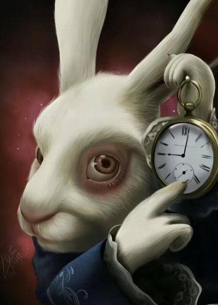
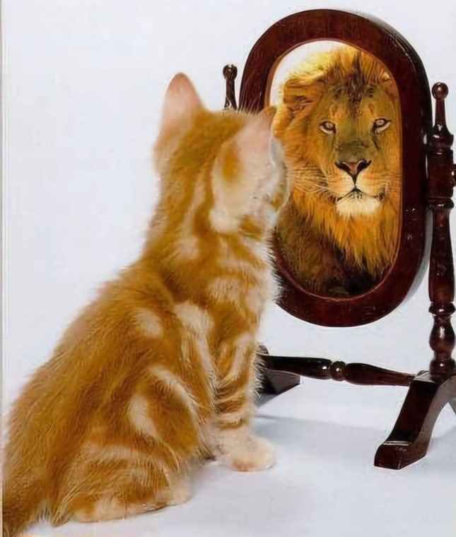

LooterStudio® is an independent studio in Buenos Aires. We are not for everyone. This is what Loot believes.
We believe in:
1. Always Early, Never Wrong
This is not a statement that we are better than anyone. The moment you compare yourself to someone, your ego already killed you.
It’s a statement of hunger for truth. Due diligence. New alpha. Digging where nobody is looking yet. How early you are is the cleanest measure of how much you want it.
But early means nothing without proof. Anyone can say they saw it coming. We say it first, in public, on the record, and let the result speak. Being right after the fact is opinion. Being right before, with receipts, is truth.
Never wrong doesn’t mean we never miss. It means we never hide the misses.
2. The Barrier Just Fell
Every time a barrier to knowledge falls, the people who built their identity around it get exposed. This time the barrier is the cost of learning itself.
The polymaths of the past mastered everything, but they couldn’t monetize everything they knew. Now, with superintelligence on your side, you can learn any field in weeks and turn every form of art the internet allows into value. Polymaths will rule the next hundred years.
And stop treating the internet like a game you log into. Your Gmail, your LinkedIn, your search bar, your feed: it’s already the game. It’s the real realm. Spend your time here like you mean it.
3. Just Loot It
You can simply just do things. Nobody cares.
Screenshot a hoodie from a designer in Paris and make your version, with your texture and your style. Study every book you can and write your thesis. Take what works from every page you admire and give birth to something cleaner, sharper, cooler. That’s looting.
But there are levels to the iceberg. Loot the input, never the output.
Look at One Entertainment. They own the night in their city. They moved first, and that’s a monopoly. Everything that came after tries to be like them, and it feels like a copycat. Whatever the copycats do, every party, every flyer, every move, is just free marketing for the original. Not because I say so. It’s what people feel when they see it. The first keeps innovating; the second stays second forever. All roads lead to Rome.

If people can still see where it came from, you didn’t loot it, you copied it. Take everything. Return it better. Then watch the one who inspired you get inspired by you.
4. The Eye Sees All
“Trust me” is dead. Show me.
The pyramid has one eye for a reason. It’s not watching you. It’s the witness.
That’s why we embrace the Illuminati. The old ones hid in the dark and watched everyone. We put the eye on everything we build, so nothing can hide.
5. Delusional Mindset

You become what you believe. Want to be smarter? Act like it. Richer? Act like it. Closer to faith? Act like it. Want to be an NPC? Act like it. Everything is ruled by your actions.
There are three kinds of people. The humble one who is hungry but hides. The pure consumer who never makes anything. And the one who breaks both and posts. Don’t be the humble guy trapped in a rockstar body.
Bad days will come. Keep moving. Moving means doing, doing means getting better, and getting better compounds.
If your goals look reachable to the average person, you belong to the system. Chase the impossible and become the person who makes it happen. Delusion without results is madness. Delusion with results is vision. The scoreboard decides which one you are.
6. Legacy
What the fuck is legacy?
Ask anyone where they see themselves. Are they set for life? Are they living right now the way they want to live in ten years?
Don’t plan your day. Plan centuries ahead.
Will your children’s children be proud of the person behind that phone right now?
Two-year thinkers chase what’s hot. Thousand-year thinkers build what compounds.
That’s why we’re early. We’re just looking further.
Look further. Say it first. Loot the input. Let the eye watch. Act like it. Build what outlives you.
Always early, never wrong. Just loot it.
— Lord of the Loot (LL*)